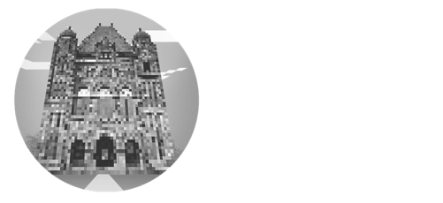
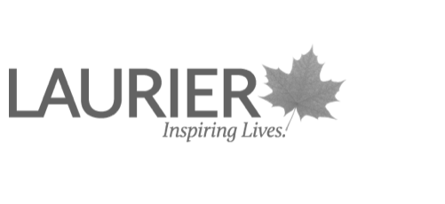
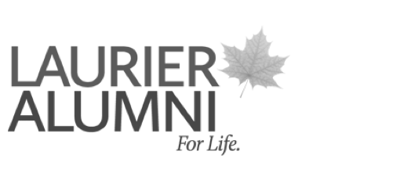
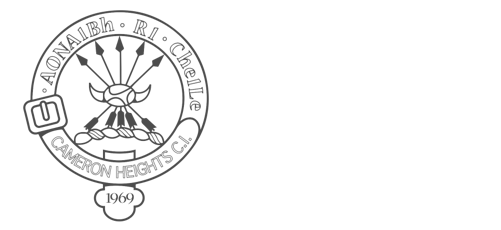

About
Hi, I'm Joel!
I’m a Canadian designer and student studying User Experience Design.
I study UX for a number of reasons. I have a background in graphic design, and a passion for aesthetics; sometimes I get emotional over fonts. I’ve helped my grandmother use and understand technology for as long as I can remember and I spend a great deal of my life wondering why things are the way they are.
So many things we interact with in our everyday lives are the result of decisions. Made by designers, by manufacturers, by users, every aspect of the experience from start to finish are impacted by those decisions. Too often though, people neglect those decisions and fail to realize the impact of their choices, and fail to understand the gravity of each and every moment in the interactions that make up our lives.
UX inspires me because it encourages kinds of thinking I don’t necessarily have the chance to consider or contribute to in other disciplines. It gives me opportunities to consider many perspectives; to work on developing the kind of empathy we should all have for each other, regardless of whether it’s in the context of UX or interpersonal relationships.
So here I am, doing my best to contribute consciously in meaningful ways to the interactions that fill our days; moments with our screens, with our friends, with our environments. I consider myself quite fortunate to have the opportunities I have to make an impact on the lives of the people who engage with me in so many different ways, and I’m doing my best to take advantage of each and every chance I get to do so.
Here’s to making things better, one decision at a time.
Education
Honours Bachelor of Design
User Experience Design
Class of 2022
- Golden Hawk of the Year Award (2020)
- Extramural Volleyball Award of Excellence (2020)
- Digital Productions & Outreach Coordinator, Athletics and Recreation (2019-2020)
- Editor-in-Chief, Laurier Brantford’s Yearbook (2018-2020)
- Residence Life Don (2018-2019)
- Alumni Association Award of Merit (2017-2018)
- Community Representative of the Year, Residence Athletics Council (2017-2018)
- Facilitated multiple design challenges for high school students within the Waterloo Region utilizing 'Extraordinaries' game on behalf of Wilfrid Laurier University
- Worked with a small group of peers to facilitate a design sprint at Google's Waterloo Campus during Fluxible 2018 on behalf of Wilfrid Laurier University
Experience

Product Designer
May 2020-Present
- I'm currently serving a co-op term with Ontario Digital Service, based in the Communitech Hub in Kitchener.
- I work with a team of designers and developers to create insights on user behaviour with focused research, and rapidly iterate on products / services in a variety of contexts that support the people of Ontario.
- Project I've worked on include chat support for Ontario.ca, digital identity, e-Signatures, trade event sign-up forms, and more. For more information, check out my portfolio.
User Experience Designer
2019-2020
- Researching, prototyping, coding, and testing a redesigned e-commerce experience with a goal of increasing conversions.
- I worked closely with the company CEO and strategy teams to develop brand personas, journey maps and purchase flows to better understand users and their needs.
- I also served as the primary researcher on a comprehensive website redesign and was responsible for the developmental execution of the redesign. I worked with Wordpress and a suite of plugins to achieve the desired look, feel, and functionality.
User Experience Designer
2018
- Researching, designing, ideating, prototyping, and testing interfaces for projects on both desktop and mobile platforms.
- I primarily worked collaboratively with internal and external stakeholders to develop a platform for high school students to connect with international university recruiters.
World Council on City Data, WLU UXSA, S.H.O.R.E.
2017-2020
- Researching, designing, ideating, prototyping, and testing interfaces for projects on both desktop and mobile platforms.
- I primarily worked collaboratively with internal and external stakeholders to develop a platform for high school students to connect with international university recruiters.
UX, UI, Graphic & Web Design
2018
- Working with companies in a number of industries including automotive, catering and entertainment to consult on user experience and develop websites, graphics packages, user interfaces and other content for both print and digital production.
Co-curricular roles*
* Paid positions
Digital Productions & Outreach Coordinator
2019-2020

Residence Life Don
2018-2019
Editor-in-Chief, Laurier Brantford's Yearbook
2017-2020
Awards and achievements
Wilfrid Laurier University
Department of Athletics
2020
Awarded to one student annually in recognition of their outstanding contributions to the athletics program.
Communitech (4th place)
2018
Placed 4th at the finals of a national design sprint competition, with the initial round having been participated in by hundreds of designers.

Laurier Alumni Association
2018
Awarded to one student annually who demonstrates outstanding academic achievement, leadership qualities and participation in school and community activities.
Wilfrid Laurier University
Department of Athletics (Volleyball)
2020
Awarded to one student per team, voted on by peers. I have served as a player, coach, and captain for the Laurier Brantford volleyball team since 2017.
Wilfrid Laurier University
Residence Athletic Council
2020
Awarded to one student annually per First Year Leadership Program (FYLP) council in recognition of outstanding contributions to the council. Voted on by peers and coordinators.

Cameron Heights Collegiate Institute
Department of Athletics
2017
Awarded to one student annually in recognition of outstanding contributions to the athletics program at Cameron Heights in their senior years.
Proficiencies
I want to acknowledge that this portfolio website was built on territories traditionally occupied and cared for by Indigenous Peoples. I attended Wilfrid Laurier University's Brantford campus in an area traditionally occupied by Anishinabeg, Haudenosaunee and Neutral peoples. I want to express my gratitude for the opportunity to learn and grow on this land, which continues to be cared for by the First Peoples of Canada. We must continue to care about the land and about the issues facing Indigenous peoples in Canada.
To learn more about territory acknowledgements and how you can contribute to reconciliation, click here.

Have a problem that could use a good designer?
I encourage you to get in touch; I'd love to chat about what a potential solution could look like.